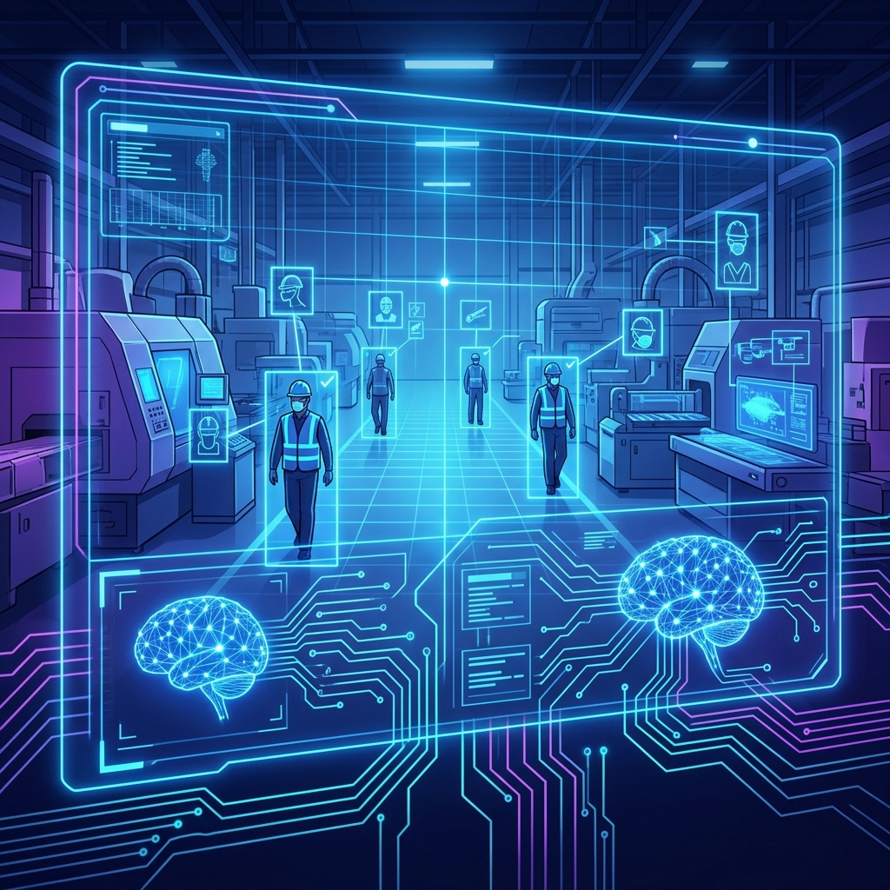
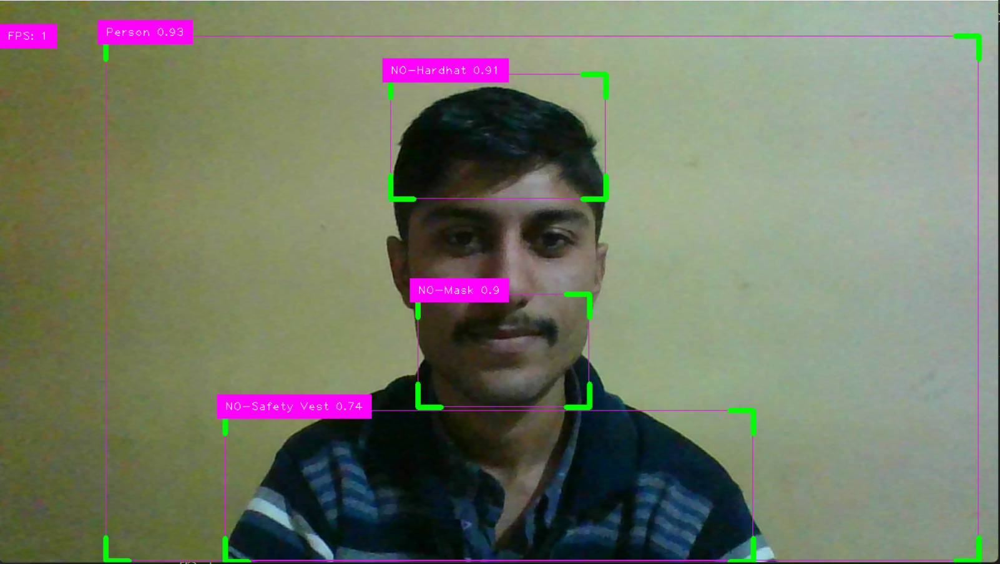

Real-time Personal Protective Equipment detection using YOLOv8 & Computer Vision — ensuring industrial safety through intelligent monitoring of |

Comprehensive PPE detection capabilities powered by state-of-the-art deep learning
Instantly detect and classify personal protective equipment across multiple video streams with millisecond response times.
Accurately identify whether workers are wearing safety helmets and hardhats with over 99% precision in varied lighting.
Monitor high-visibility vest compliance across factory floors and construction sites in real time.
Connect IP cameras and webcams for continuous 24/7 surveillance of safety compliance across all zones.
Receive immediate audio and visual alerts when PPE violations are detected, enabling rapid response.
Powered by the latest YOLOv8 architecture for industry-leading object detection speed and accuracy.
Real-time monitoring interface with intelligent alerts and compliance tracking

Four simple steps from camera setup to real-time safety enforcement
Connect IP cameras or webcams to the monitoring system across factory zones
YOLOv8 model processes each video frame in real time with GPU acceleration
System identifies helmets, vests, masks, gloves, and other safety equipment
Violations trigger immediate audio and visual alerts for safety officers
Built with industry-leading frameworks and tools
Core Language
Object Detection
Computer Vision
Deep Learning
Web Framework
Dashboard UI
PPE Detection Kit is an AI-powered safety monitoring system designed for industrial and automobile manufacturing environments. Using YOLO object detection and computer vision, it monitors workers in real-time to ensure compliance with safety equipment requirements.
The system detects multiple classes of protective equipment and can alert supervisors instantly when violations are found — reducing workplace accidents and ensuring regulatory compliance.
Optimized image dimensions for fast inference
Curated dataset from Roboflow for high accuracy
Rigorous validation for model reliability
Designed for factories and construction sites
GPU-accelerated for live video analysis
AI / ML Developer
Passionate about leveraging artificial intelligence and computer vision to solve real-world industrial safety challenges. Building intelligent systems that protect workers and save lives.